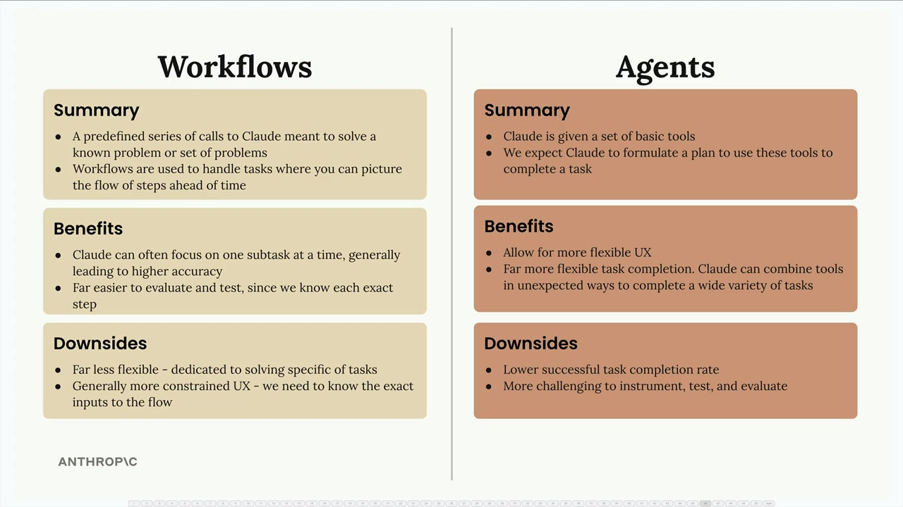

Workflow или агент
Чему научитесь
Видео 2:00 и текст урока
К концу урока вы сможете:
- сравнить плюсы и минусы workflow и агентов;
- обосновать выбор архитектуры для задачи.
Видео и текст урока.
Смотреть урок на Skilljar Workflows vs agents · 2:00Создавая приложения на основе AI, вам часто придётся выбирать между двумя архитектурными подходами: workflow и агентами. У каждого свои преимущества и компромиссы, из-за которых они подходят для разных сценариев.

Что такое workflow
Workflow — это заранее определённая серия вызовов Claude, которая решает известную задачу или набор задач. Workflow используют, когда можно заранее представить порядок шагов, то есть когда вы знаете точную последовательность, нужную для выполнения задачи.
Можно думать о workflow как о разбиении большой задачи на гораздо более мелкие и конкретные подзадачи. Каждый шаг сосредоточен на одной области, поэтому Claude работает точнее.
Что такое агент
Агент получает набор базовых инструментов, и от Claude ожидается, что он составит план, как с их помощью выполнить задачу. В отличие от workflow, вы заранее не знаете, какие именно задачи будут поставлены, поэтому система должна быть гибче.
Агенты могут творчески справляться с самыми разными задачами, сочетая инструменты неожиданными способами.
Преимущества workflow
- Claude может сосредоточиться на одной подзадаче за раз, что обычно даёт более высокую точность;
- гораздо проще оценивать и тестировать, потому что вы знаете каждый шаг;
- более предсказуемое и надёжное выполнение;
- лучше подходят для решения конкретных, чётко определённых задач.
Преимущества агентов
- позволяют сделать пользовательский опыт гибче;
- гораздо гибче в выполнении задач — Claude может неожиданно сочетать инструменты и решать самые разные задачи;
- справляются с новыми ситуациями, которые не предусмотрели при разработке;
- могут попросить у пользователя дополнительные данные, когда это нужно.
Недостатки workflow
- гораздо менее гибкие — предназначены для решения конкретных типов задач;
- обычно более ограниченный пользовательский опыт — нужно знать точные входные данные для процесса;
- требуют больше предварительного планирования и проектирования.
Недостатки агентов
- ниже доля успешно выполненных задач по сравнению с workflow;
- сложнее инструментировать, тестировать и оценивать, потому что часто неизвестно, какую последовательность шагов выполнит агент;
- менее предсказуемое поведение.
Когда что применять
Ваша главная цель как инженера — надёжно решать задачи. Пользователям, скорее всего, неважно, что вы построили навороченного агента, — им нужен продукт, который стабильно работает.
Общая рекомендация — всегда, где возможно, реализовывать workflow и прибегать к агентам, только когда они действительно необходимы. Workflow дают надёжность и предсказуемость, нужные большинству продакшен-приложений, а агенты дают гибкость для сценариев, где точные требования нельзя определить заранее.
Выбирайте workflow для чётко определённых процессов, а агентов — когда нужно обрабатывать непредсказуемые, разнообразные запросы пользователей, требующие творческого решения.
Дальше
Раздел об агентах и рабочих процессах пройден. В оригинале после этого урока идёт официальный квиз Skilljar — Quiz on Agents and Workflows (7 вопросов, проходится на Skilljar). Проверить себя можно и нашим пробным экзаменом по агентам. Дальше — итоги курса и итоговый экзамен.
Оригинал урока: Workflows vs agents.